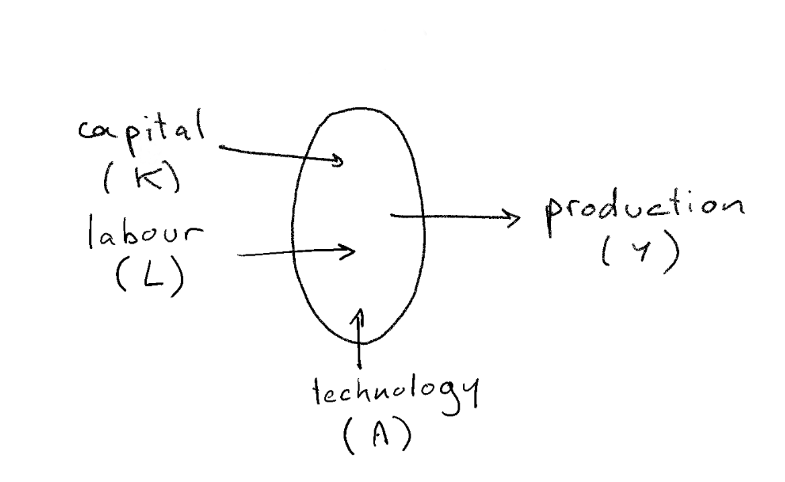
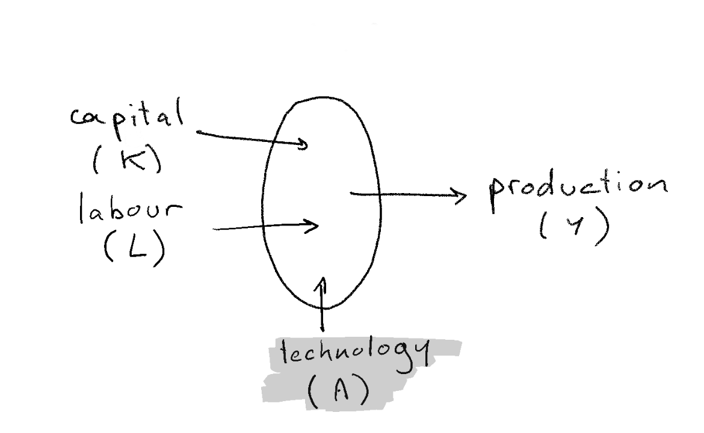
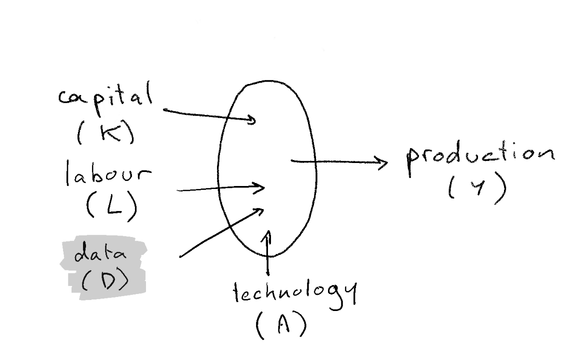
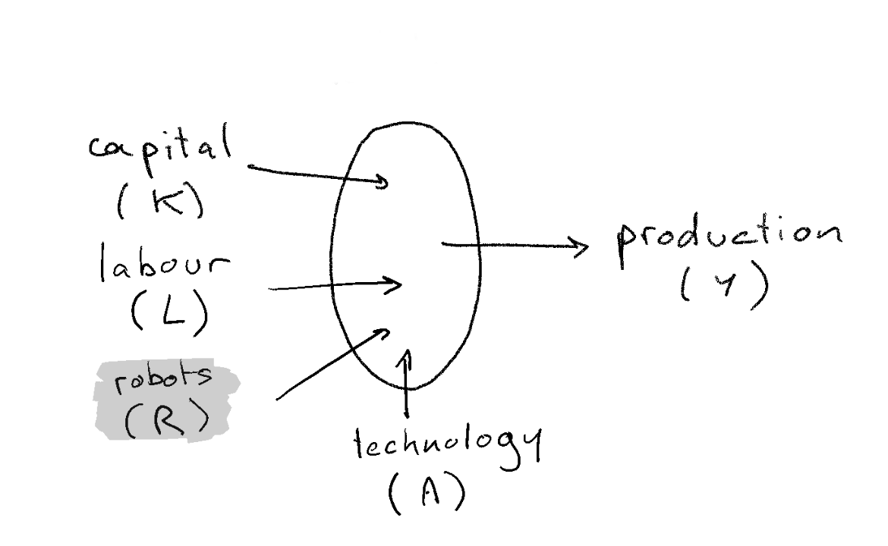
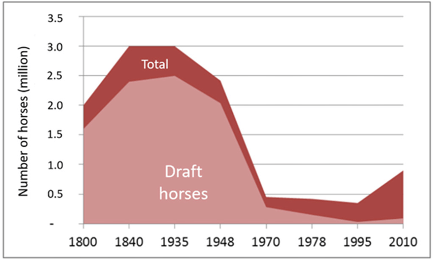
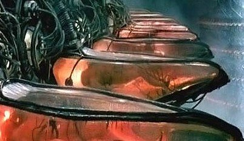

How do you see the future of AI ?
TODO: change image

- Science Fiction has explored many issues associated with AI.
-
Very often economic future is bleak…
- Why is that so?
Rise of Artificial Intelligence
Can we (economists) do more than Science Fiction?
Pablo Winant
What is AI?
What is AI
- AI can be:
- a field
- a set of technologies including
- machine learning
- deep learning
- reinforcement learning
- a philosophical concept
-
Usual definition of AI:
- mimic human intelligence:
- problem solving: achieve goal without being explicitly told how
- learning: gets better over time
- without emotions
- mimic human intelligence:
How to make the difference between a robot and a ?
- Check whether it thinks like a human being
- Turing test:
- a machine discussing with a human must be recognized as a human 50% of the time
- can machines emulate human behaviour?
- Chinese Room thought experiment:
- how to differentiate somebody who speaks chinese and somebody who follows rules to speak?
- turing test cannot determine whether machines think
Impress me?
- So, what can machines do that is really intelligent?
AI effect
- people have a way to discount achievments of AI as “not AI”
- because not impressive enough
- because humans do it in “a different way”
- Larry Tesler theorem: “AI is whatever hasn’t been done yet”
- Nick Bostrom: “once something becomes useful enough and common enough it’s not labeled AI anymore”
- keep human special
- interestingly that didn’t seem to be a concern before the 70s
What does the machine do?

- fit a model to represent the data (learn)
- extrapolate to make a prediction
- like a linear regression?
- yes, but with more complicated model
- machine learning has many of them
- deep learning is the current state of the art
How does it do it ?


in the 50s: Rosenblatt: first artificial neuron
nowadays: neural networks
- thousands/millions of neurons
- trained on efficient hardware
artificial neural network have nothing to do with the brain anymore
neural network adjusts in order to maximize “some objective”
- ex: GPT-3 175 billion parameters trained on 45 TB of Data
Weak AI / Strong AI
- Weak AI
- specific task (recognize images, interpolate data, drive car)
- human specify objectives, training hyperparameters
- Strong AI:
- general-purpose
- sets it own goal…
- …evolve over time
- at least as strong as humans
- turing test
- CRA
- would still have to learn
- Singularity: AI is developped with research made by AI
Prepare yourself for surprises
Don’t be naive: AI might have intrinsic limits…
- … but we are repeatedly proven wrong
- … if they exist we don’t know what they are
Von Neuman: “You insist that there is something a machine cannot do. If you will tell me precisely what it is that a machine cannot do, then I can always make a machine which will do just that!”
In the long run, we should think about AI in a way that is not too specific to its current nature
“This Time it’s Different” or “Same old, same old”

Reminder: the Neoclassical View of Production
- production takes several factors as inputs
- marginal returns w.r.t. each factor are decreasing
- factors are paid according to their marginal productivity
- the precise description depends on the problem under consideration
- what would you change to take into account the effect of AI?
- data, technological change ?
Three hypotheses about the economic nature of AI
- Another Technological Advance
- prediction technology
- data
- Another Technological Advance, Just, More Extreme
- a competitor for humans
- Something else Completely
These views complement each other
AI is a change in the cost structure

AI is a change in the cost structure
Avi Goldfarb: Prediction Machines: The Simple Economics of Artificial Intelligence 2018
- suprise: many problems can be formulated as prediction problems
- when the cost of something decrease you want more of it (law of demand)
- production adjusts to minimize cost of production
- AI is a decrease in the cost of predictions
- Value of all tasks/jobs complementary with predictions will rise
- Salary of other tasks will fall
- Adjustment is key
Another implication of the same thinking:
- today Deep Learning consumes a lot of energy
-
GPT-3 training produces CO2 equivalent equivalent to 126 danish homes
- 50 petaflop/s-days (laptop << 1000 teraflops/s : 50000 days for a regular laptop)
-
seems crazy, right ?
- or, is it ? what other process does the same in a more efficient way ?
-
is such a technology unethical?
- DL technology has been developped with cheap energy / cheap carbon emissions
- algorithmically very inefficient (bruteforce)
- lots of useless operations (lots tries and errors due to bad priors)
- lots of inefficiency can be remedied
- ex: deep learning chess programs on smartphones
- DL technology has been developped with cheap energy / cheap carbon emissions
AI is Data

AI: adds data to the production function
Chad Jones and Christopher Tonetti (Stanford) Nonrivalry and the Economics of Data (Sep 2020, American Economic Review)
- Data is a factor, not a technology
- idea: use machine learnig to build self driving cars
- factor: each car-maker gathering his own data
- Data improves quality of product (even if anonymous)
-
A nonrival good: can be used with leftovers
- but excludable: club goods
-
Nonrival implies increasing returns to scale:
- marginal value of new data increases more than proportionnally
AI: adds data to the production function (consequences)
-
increasing returns to scale implies (natural) monopoly
- GAFAMs
- increasing suboptimal monopoly rents (already a problem before existence of AI…)
- at this stage not clear what is the barrier to entry: data-gathering or data-processing
-
what kind of good is data
- where are the markets? (empirically it seems “undertraded”)
- who owns the data ? Consumer, producer.
- solutions:
- split the monopolies (if deadweight loss is too big)
- outlaw data gathering (big productivity loss)
- force data-sharing: make it a public good
- let the consumer be free to decide whether to rent his data (remove externalitiess)
Rise of the Robots

Economic singularity
What about the very long run?
Recall the neoclassical world
- market economy
- technological progress reduces production cost
- always good for consumers. Increase (real) total income.
- becomes an inequality problem
-
But:
- whether it reduces salaries depends on whether growth is labour augmenting or capital augmenting
- if AI is a close enough substitute, salaries of “humans” as a whole are at risk
- the is an economic singularity when salary of humans arrives below the subsistance level
-
Two sets of authors reach very similar conclusions
- Anton Korinek and Joseph Stiglitz: more complete/technical
- Gilles Saint Paul: more political economy
Scenarios
Analysis taken from Gilles Saint Paul
Hypothesis: all humans can be replaced by more productive robots
Comparative advantage logic: humans specialize in work where their comparative disadvantage is lowest (services, art, crafting…)
Scenario 1: society redistributes income from robots
Four political subscenarios
-
welfare state
- robot-owners are taxed, income is redistributed
- for instance as universal income
- some productivity loss
- what about international competition?
-
rentiers society
- robot owners invest the rent over many generations. capital concentration increases
-
neo fordism
- Firms pay huge salaries for essentially useless jobs (powerpoint presentations, …)
- Useful to sustain demand
-
roman empire
- robot owners: patricians (top 2%)
- rest of population: plebeians
- survive thanks to clientelism
- robots: slaves
Scenario 2: wars, starvation, epidemic

- human income (marginal productivity) falls below subsistance levels
- malthusian effect: population growth decreases
- not unheard of (Leontieff): consider population of draft horses
Scenario 3: the Matrix

- human wage decrease
- subsistance level decrease dramatically too
Something Else Completely?
- Right now AI is a technology
-
What if it becomes another intelligent agent?
- has its own goals
- its own preferences
- with superhuman thinking abilities…
-
Response:
- Anton Korinek: if market economy survives
- malthusian and non-malthusian scenarios
- At that stage humans might be something different completely
- transhumanism
- Anton Korinek: if market economy survives
Conclusion
- Research on AI is very speculative: especially about the long run
- But traditionnal economics still help
- How to think of AI as a new kind of intelligent beings?
- hard to do it scientifically
- imagine
- play games
More Readings
Chad Jones and Christopher Tonetti: Nonrivalry and the Economics of Data, American Economic Review
Avi GoldFarb: Prediction Machines: The Simple Economics of Artificial Intelligence 2018
Brynjolfsson, Tom Mitchell, and Daniel Rock: What Can Machines Learn and What Does It Mean for Occupations and the Economy?, American Economic Review P&P
Gilles Saint Paul: Robots Vers la fin du travail ?
Anton Korinek, Joseph E. Stiglitz: Artificial Intelligence and Its Implications for Income Distribution and Unemployment, chapter in Artificial Intelligence and Its Implications …, NBER
- also on coursera